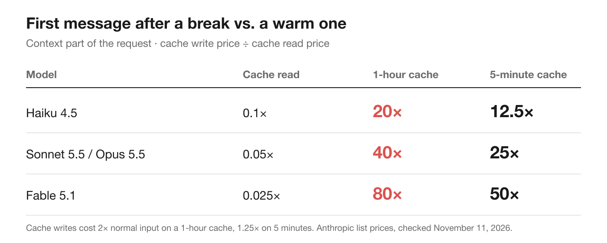
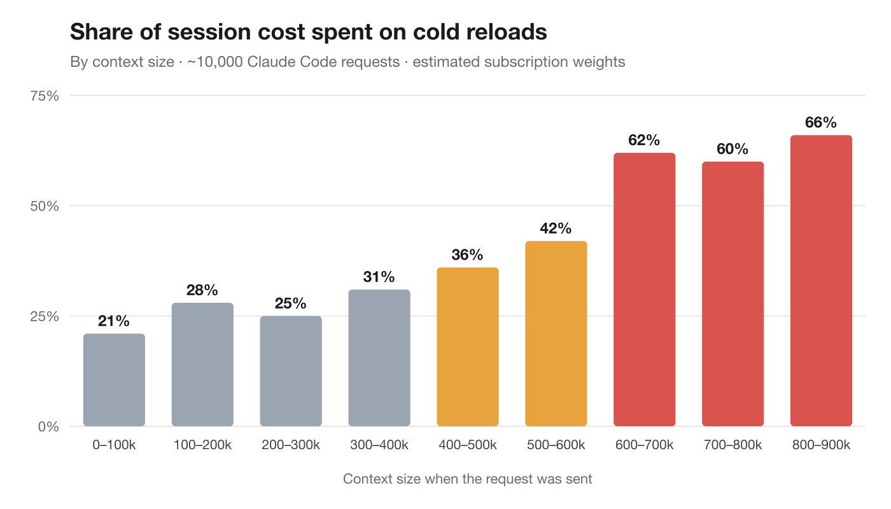

How to use Claude Code's prompt cache to stretch your weekly limit
I measured 10,000 of my own requests. Warm turns cost almost nothing; the first one after a break costs 12–80× more. Three rules keep you on the cheap side.
Key findings
- When Claude Code's prompt cache expires, the first message back costs 12× to 80× a warm turn, depending on the model and whether the cache lasts 5 minutes or 1 hour.
- In 10,000 of my own requests, cold reloads were about a fifth of the cost in sessions under 100k tokens and 60–66% above 600k.
- Compact before a break, start fresh with a handoff after one, and let small sessions be.
I had a Claude Code session open for most of a day. It was a good one: 250k tokens of context, and the agent knew the codebase, the plan, and the three approaches we'd already thrown away. I went to lunch, came back, and typed one line: "ok, carry on."
That single line used more of my budget than the previous twenty messages put together.
Nothing was broken. I'd paid what I now call the cold session tax, and once I started measuring it, I found it in almost every expensive session I'd run.
Every message resends the whole conversation
Models don't remember anything between requests. Each time you send a message, Claude Code sends the entire conversation again: the system prompt, your project context, every earlier message and tool result, and your new line at the bottom.
That sounds ruinous, and it would be, except that almost all of each request is identical to the one before. So the API caches it (Anthropic calls this prompt caching). On a normal turn, the unchanged start of the request is read from cache at a small fraction of the normal input price, and only the new part is processed in full.
The catch is that the cache expires. It has a time to live (TTL), and every request that hits the cache resets the timer. Keep working and it stays warm. Stop, and it goes cold.
There are two lifetimes. On a Claude subscription, within your plan's limits, the main conversation uses a 1-hour cache. On an API key or usage credits, it's 5 minutes. A coffee break cools a 5-minute cache. A 1-hour cache survives a meeting, but not lunch.
Why the first message back is so expensive
When the cache has expired, there's nothing to read. The first request back has to process your whole context again and write it to the cache. Cache writes cost more than normal input; cache reads cost far less (see Anthropic's pricing page). The gap between them is the tax.

- Haiku 4.5 and most older models: cache reads are 0.1× normal input, so a cold reload costs 20× a warm turn on a 1-hour cache (12.5× on 5 minutes).
- Sonnet 5.5 and Opus 5.5: reads are 0.05×, so it's 40× (25× on 5 minutes).
- Fable 5.1: reads are 0.025×, so it's 80× (50× on 5 minutes).
So for the context part of the request, the first message after a break costs somewhere between 12× and 80× a warm one, depending on your model and your cache lifetime.
In dollars at API list prices: a 241k-token Opus 5.5 session on a 1-hour cache reads its context for about five cents on a warm turn. After lunch, the next message writes it again for about $1.93. That's forty warm turns' worth, spent before Claude has written a word.
On a subscription you don't see dollars, but the reload still counts against your 5-hour and weekly usage limits. If you hit your limit sooner than expected after a long break, this is often why. Anthropic doesn't publish exactly how cache reads and writes are weighted there, so treat these multipliers as the shape of the cost, not an exact figure.
What I found when I measured my own sessions
I wanted to know how much this mattered in practice, so I went through 50+ of my own Claude Code transcripts: about 10,000 API requests, three-quarters of them on Opus 5.5. Every request records its context size, how much was read from cache, how much was written, and a timestamp. That's enough to tell warm turns from cold ones.
Three things surprised me.
1. A big warm session is cheaper than I thought. I had assumed that, per message, a 500k session costs ten times what a 50k one does. It doesn't. The new tokens and the output dominate each request; the cached context adds a small amount on top. A warm request at 500k cost about 2–3× a small session's request, not 10×.
2. The breaks are where the money goes. The bigger the session, the larger the share of its total cost that came from cold reloads after a break. Under 100k it was about a fifth. At 500k it was over 40%. From 600k up it was 60–66%: most of what those sessions cost was the first message after each gap.

| Context size | Requests | Cost from cold reloads |
|---|---|---|
| 0–100k | 2,269 | 21% |
| 100–200k | 3,093 | 28% |
| 200–300k | 1,255 | 25% |
| 300–400k | 995 | 31% |
| 400–500k | 747 | 36% |
| 500–600k | 569 | 42% |
| 600–700k | 469 | 62% |
| 700–800k | 363 | 60% |
| 800–900k | 211 | 66% |
3. One "message" is really five to ten requests. When you type a prompt, the agent reads files, runs commands and edits code. Each of those steps is another API request that re-reads the context. The median prompt in my data was 5 requests and the mean was 10. That matters later.
What I didn't find was any sign that the agent got sloppier as sessions grew. Re-reading files it had already read stayed at 1–2% all the way past 800k. The one thing that did make a difference was changing tasks. After I switched to a different feature in the same session, re-reads and my corrections roughly doubled. It's thin evidence (31 task switches), but it points the same way as the cost data: a break or a new task is a better reason to start fresh than size alone.
Three rules I follow now
Rule 1: Before you step away from a big session, deal with it while it's warm
/compact summarizes the conversation and carries on from the summary. While the cache is warm, the summary request reads the history from cache, so it's cheap. After a break, the same command reprocesses the whole history at full price. If you're going to compact, do it before lunch, not after.
On a 1-hour cache there's a second option for a session you really will come back to soon: send one short message before the hour is up. It resets the timer for a tiny fraction of a cold reload. It isn't worth doing all night, and on a 5-minute cache you'd be doing it constantly.
Rule 2: Coming back cold, start fresh with a handoff
Resuming costs nothing on its own. claude --resume loads the transcript from disk and shows it to you, and nothing is sent until you submit a prompt. That's a free moment to decide.
If the session is big and cold, type /clear and start a new one. It starts small instead of reloading 250k. What you lose is the context, so bring the important part with you: a short handoff with the goal, the files you were in, what's done, what's next, and the approaches you already rejected. A good handoff is a few hundred to 1,500 tokens, not hundreds of thousands.
Is it worth it, given the new session has to rediscover some things? In my data a fresh session started at about 50k and spent another 40k or so finding its feet. Against the extra cost of carrying a large context on every request, that pays for itself in roughly 7–12 requests. At 5–10 requests per prompt, that's one or two prompts. If you have more than a couple of prompts left in the task, the fresh session is cheaper, even while the cache is still warm.
Rule 3: Small sessions can just send it
A 30k-token session reloaded cold is still a cheap request. Don't overthink it. Save the ritual for the big ones.
Check your own sessions in a minute
You don't have to take my numbers on faith. Claude Code keeps every session as a JSONL file under ~/.claude/projects. Each reply's usage record holds the context size, a timestamp, and whether the cache was written for 5 minutes or an hour. If the gap since the previous reply is longer than that lifetime, the reply was a cold reload.
Ask your agent
The easiest way is to let Claude Code do the analysis. Start a new session (so the analysis itself doesn't run on a big context) and paste this prompt:
Analyze my Claude Code history for cold-cache reloads. Don't read the
transcript files into your context: write and run a Python script, and
never print message text.
Data: every *.jsonl file under ~/.claude/projects. Use lines with
"type": "assistant" that have message.usage, counting each message.id once.
For each reply:
- context size = input_tokens + cache_creation_input_tokens
+ cache_read_input_tokens
- cache lifetime = 1 hour if the latest earlier reply in the same file that
wrote to the cache had cache_creation.ephemeral_1h_input_tokens > 0,
otherwise 5 minutes
- it's a cold reload if the gap since the previous reply in the same file
is longer than that lifetime
Estimate cost in units of one normal input token: uncached input 1x,
output 5x, cache write 2x (1-hour) or 1.25x (5-minute), cache read 0.1x,
or 0.05x if message.model contains "opus-5-5" or "sonnet-5-5", or 0.025x
if it contains "fable-5".
Report:
1. How many cold reloads there were above 100k tokens, and the date range.
2. The share of total estimated cost that came from cold reloads, by
context size: 0-100k, 100-200k, 200-400k, 400-600k, 600k+.
3. The 5 most expensive cold reloads: date, session file, context size,
model, and how long the gap was.
4. For each of those, how many warm turns of the same size it cost.
5. Two or three habits that would have avoided most of this cost.The weights are API list prices relative to normal input. On a subscription, read the result as the shape of the cost, not an exact bill.
Or run the script yourself
If you'd rather not spend tokens on it, this script does the same analysis locally. It reads only token counts and timestamps, never your messages, and prints a report: how many times you came back to a cold session, what those cold starts cost, how long you'd been away, and which sessions were hit hardest.
"""Cold start report for Claude Code.
Reads your local transcripts (~/.claude/projects/*/*.jsonl) and reports every
time you came back to a session after its prompt cache had expired, and what
that cost. Only token counts and timestamps are read; no message text is printed.
"""
import glob
import json
import os
from collections import defaultdict
from datetime import datetime
# API list prices per million tokens: base input, cache read.
# Cache writes cost 2x base input on a 1-hour cache, 1.25x on a 5-minute one.
PRICES = {"fable-5-2": (8, 0.20), "fable-5-1": (10, 0.25), "opus-5-5": (4, 0.20), "sonnet-5-5": (2, 0.10), "haiku-4-5": (1, 0.10)}
DEFAULT_PRICE = (4, 0.20)
BUCKETS = [(0, "under 100k"), (100_000, "100-200k"), (200_000, "200-400k"), (400_000, "400-600k"), (600_000, "600k+")]
def price_for(model):
return next((p for key, p in PRICES.items() if key in (model or "")), DEFAULT_PRICE)
def bucket(size):
return [label for floor, label in BUCKETS if size >= floor][-1]
def gap_text(seconds):
hours = seconds / 3600
return f"{hours:.1f} h" if hours >= 1 else f"{seconds / 60:.0f} min"
def scan(path):
"""Returns (replies, total cost, cold starts) for one transcript."""
last, last_ttl, seen = None, 300, set()
replies, total, cold = 0, 0.0, []
for line in open(path):
try:
row = json.loads(line)
except json.JSONDecodeError:
continue
msg = row.get("message") or {}
usage = msg.get("usage")
if row.get("type") != "assistant" or not usage or msg.get("id") in seen:
continue
seen.add(msg.get("id"))
written = usage.get("cache_creation_input_tokens", 0)
read = usage.get("cache_read_input_tokens", 0)
size = usage.get("input_tokens", 0) + written + read
if size == 0: # system or error replies carry no tokens
continue
replies += 1
when = datetime.fromisoformat(row["timestamp"].replace("Z", "+00:00")).astimezone()
writes = usage.get("cache_creation") or {}
ttl = 3600 if writes.get("ephemeral_1h_input_tokens", 0) > 0 else last_ttl
base, read_price = price_for(msg.get("model"))
write_price = base * (2 if ttl == 3600 else 1.25)
total += (usage.get("input_tokens", 0) * base + written * write_price
+ read * read_price + usage.get("output_tokens", 0) * base * 5) / 1e6
if last and (when - last).total_seconds() > last_ttl:
cold.append({
"when": when, "size": size, "gap": (when - last).total_seconds(),
"model": (msg.get("model") or "unknown").replace("claude-", ""),
"times": (2 if last_ttl == 3600 else 1.25) * base / read_price,
# What this reply paid to rewrite the cache, minus what a warm read would have cost.
"extra": written * (write_price - read_price) / 1e6,
})
if writes.get("ephemeral_1h_input_tokens", 0) > 0:
last_ttl = 3600
elif writes.get("ephemeral_5m_input_tokens", 0) > 0:
last_ttl = 300
last = when
return replies, total, cold
def main():
sessions, all_cold, total_cost, total_replies = [], [], 0.0, 0
for path in glob.glob(os.path.expanduser("~/.claude/projects/*/*.jsonl")):
replies, cost, cold = scan(path)
if not replies:
continue
project = os.path.basename(os.path.dirname(path)).split("-")[-1] or "?"
session = os.path.basename(path)[:8]
for c in cold:
c["session"], c["project"] = session, project
sessions.append((session, project, cold))
all_cold += cold
total_cost += cost
total_replies += replies
if not all_cold:
print(f"Scanned {len(sessions)} sessions. No cold starts found.")
return
extra = sum(c["extra"] for c in all_cold)
hit = [s for s in sessions if s[2]]
first = min(c["when"] for c in all_cold)
last = max(c["when"] for c in all_cold)
print("COLD START REPORT (Claude Code, estimated at API list prices)")
print("=" * 66)
print(f"Sessions scanned: {len(sessions)} ({total_replies:,} replies)")
print(f"Cold starts: {len(all_cold)} in {len(hit)} sessions, {first:%b %d} to {last:%b %d}")
print(f" over 100k tokens: {sum(c['size'] >= 100_000 for c in all_cold)}")
print(f"Extra cost of cold starts: ${extra:,.2f} ({extra / total_cost:.0%} of ${total_cost:,.2f} total)")
print("\nBY SESSION SIZE AT THE COLD START")
print(f" {'size':<12}{'cold starts':>12}{'extra cost':>13}")
for _, label in BUCKETS:
rows = [c for c in all_cold if bucket(c["size"]) == label]
if rows:
print(f" {label:<12}{len(rows):>12}{'$' + format(sum(c['extra'] for c in rows), ',.2f'):>13}")
print("\nHOW LONG YOU WERE AWAY")
for label, lo, hi in [("under 2 h (breaks, meetings)", 0, 7200),
("2-8 h (lunch, afternoon)", 7200, 28800),
("over 8 h (overnight)", 28800, float("inf"))]:
rows = [c for c in all_cold if lo <= c["gap"] < hi]
print(f" {label:<30}{len(rows):>4} cold starts ${sum(c['extra'] for c in rows):,.2f}")
print("\nSESSIONS THAT COST THE MOST TO RE-WARM")
hit.sort(key=lambda s: sum(c["extra"] for c in s[2]), reverse=True)
for session, project, cold in hit[:5]:
sizes = [c["size"] for c in cold]
print(f" {session} {project:<14} {len(cold):>2} cold starts, "
f"{min(sizes) // 1000}k -> {max(sizes) // 1000}k ${sum(c['extra'] for c in cold):,.2f}")
print("\nMOST EXPENSIVE COLD STARTS")
for c in sorted(all_cold, key=lambda c: c["extra"], reverse=True)[:5]:
print(f" {c['when']:%b %d %H:%M} {c['size'] // 1000:>4}k away {gap_text(c['gap']):>7} "
f"{c['model']:<11} {c['times']:.0f}x a warm turn ${c['extra']:.2f}")
if __name__ == "__main__":
main()Save it as cold_check.py and run python3 cold_check.py. Here's mine:
COLD START REPORT (Claude Code, estimated at API list prices)
==================================================================
Sessions scanned: 68 (9,042 replies)
Cold starts: 48 in 13 sessions, Oct 08 to Nov 03
over 100k tokens: 43
Extra cost of cold starts: $141.98 (12% of $1,136.43 total)
BY SESSION SIZE AT THE COLD START
size cold starts extra cost
under 100k 5 $1.21
100-200k 12 $12.88
200-400k 10 $22.61
400-600k 8 $30.46
600k+ 13 $74.82
HOW LONG YOU WERE AWAY
under 2 h (breaks, meetings) 22 cold starts $77.60
2-8 h (lunch, afternoon) 16 cold starts $31.58
over 8 h (overnight) 10 cold starts $32.80
SESSIONS THAT COST THE MOST TO RE-WARM
55d2c061 L2Cache 7 cold starts, 197k -> 852k $34.96
8c6f5a9b HingeJoy 7 cold starts, 245k -> 682k $30.46
2b5e1400 L2Cache 5 cold starts, 483k -> 874k $28.34
305b3630 L2Cache 7 cold starts, 64k -> 543k $18.34
1f546c39 IronTrack 8 cold starts, 173k -> 431k $17.62
MOST EXPENSIVE COLD STARTS
Oct 23 07:37 874k away 10.9 h opus-5-5 40x a warm turn $6.82
Oct 16 19:40 852k away 3.2 h opus-5-5 40x a warm turn $6.65
Oct 22 19:01 797k away 1.9 h opus-5-5 40x a warm turn $6.22
Oct 16 15:38 795k away 1.4 h opus-5-5 40x a warm turn $6.21
Oct 16 13:01 778k away 1.7 h opus-5-5 40x a warm turn $6.0748 times in under four weeks, I came back to a session after its cache had expired. 43 of those sessions were over 100k tokens, and 13 were past 600k. At API list prices that's about $142 spent only on re-warming caches. The surprise was the "under 2 h" row: most of my cold starts weren't lunch or overnight. They were a meeting that ran a little past the hour.
The report uses API prices, where cold starts were 12% of my total. On a subscription the share is likely higher, because the gap between a cache write and a cache read is estimated to be wider there. That's why the chart above, which uses estimated subscription weights, shows bigger shares.
Seeing it coming
The script tells you afterwards. The hard part is knowing in the moment how big a session is and whether its cache is still warm. Claude Code's /context shows what's filling the window, but not the clock.
The clock is already on disk, though. Every response Claude Code writes to ~/.claude/projects records its token usage and a timestamp, and Claude Code hooks can run a check just before your message is sent, and stop it.
I got tired of doing that math in my head, so I built it into L2Cache, the Mac app I make. It reads those files locally and warns me before a heavy session's cache expires, not after, and offers a one-line heartbeat I can paste myself; it never types into my terminal. When it does stop a cold first message, /clear starts a fresh session with a handoff already loaded, built from the session I'm leaving. Here it caught a 254k session with 57 minutes of cache left; a fresh session would start at about 52k.

You don't need a tool to follow the rules, though. You only need to know the tax exists.
The takeaway
Long sessions aren't expensive because they're long. They're expensive every time they go cold.
Compact or hand off before you leave, start fresh when you come back to something big, and let small sessions be.
Frequently asked questions
How long does Claude Code's prompt cache last?
On a Claude subscription, within your plan's limits, the main conversation uses a 1-hour cache. With an API key or usage credits it lasts 5 minutes. Every request that hits the cache resets the timer.
Why did one short message use so much of my Claude Code limit?
If the session's cache had expired, that message had to re-process and re-cache the whole context. That costs 12× to 80× a warm turn, depending on the model and the cache lifetime, no matter how short your message was.
Is it cheaper to resume an old session or start a new one?
Resuming is free until you send a prompt. For a big session whose cache has expired, starting fresh with a short handoff is usually cheaper. In my data it paid for itself within one or two prompts.
Does /compact save money?
Yes, if you run it while the cache is still warm, because the summary request reads the history from cache. After a break, the same command re-processes the whole history at full price.
For the full mechanics (TTL settings, the transcript fields and a per-model cost table), I wrote them up here: Why resuming a cold Claude Code session costs more. And for what goes into a good handoff: Coding agent session handoff.
L2Cache warns you before a heavy session's cache expires and offers a fresh start with a handoff.
Download L2Cache for Mac